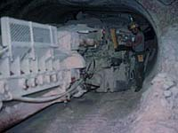
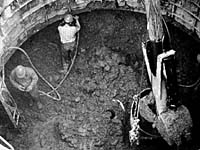
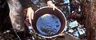
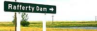

Mineral Types
Mineral Rights
Types of Mining
Prospecting
Mineral Uses
|
Mineral Types  Saskatchewan's 71,500,000 hectares of land contain vast mineral resources; base and precious metals; energy minerals; industrial minerals...discover the types of minerals extracted from the mines of this province.
Who owns the gold in the ground? If you struck oil, do you have ownership? The answers to these and other mineral rights questions are presented here.
|
|
|
|
Types of Mining  Open pit mining, surface strip mining, hard rock, soft rock, and solution mining - to dig or not to dig...that is the question. Find out the different ways in which minerals are extracted from the ground. <
 A prospector is one who locates minerals. What else is involved in the job of finding mineral resources?
 Test your knowledge of the uses of the minerals found in Saskatchewan. Don't worry if you are not correct the first time around; learn as you try.
|